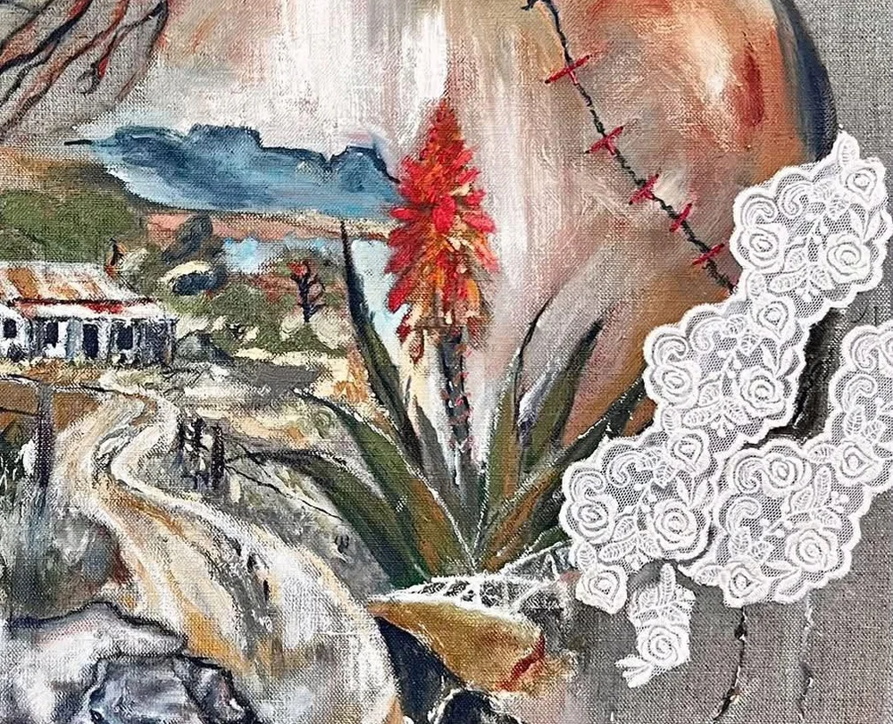
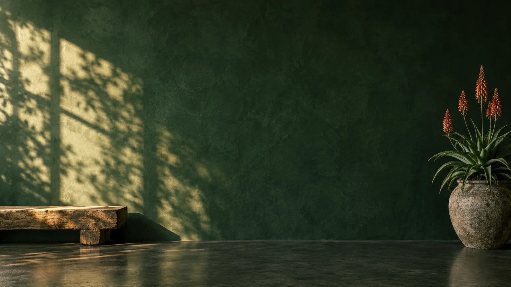
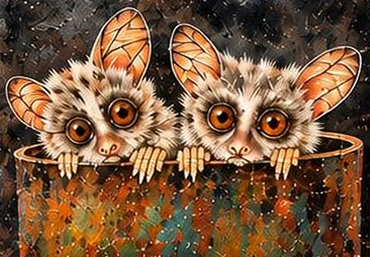
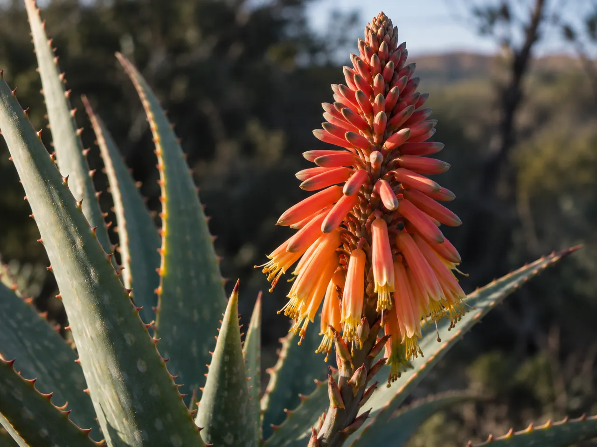

Lizette Nel
“Ek is ’n mens van die aarde.”I am a person of the earth.
Earthy colour, soft texture and close detail. Lizette’s work is a celebration of faith, family, belonging and quiet beauty.
Meet Lizette Aloe HouseArt Gallery
Aloe HouseArt Gallery

Opening soon at De Wagendrift Boerdery
Original art and local talent in the heart of the Loskop Valley.
Kuns wat jou laat stilstaan.
Kuns wat stories vertel.
Kuns wat jou hart raak.
Art that stops you. Art that tells stories. Art that touches your heart.
Keep scrolling to walk along it. Select any work for a closer look.
Swipe along the wall and tap any work for a closer look.
Two artists, and a wall that keeps growing.
See the collection
“Ek is ’n mens van die aarde.”I am a person of the earth.
Earthy colour, soft texture and close detail. Lizette’s work is a celebration of faith, family, belonging and quiet beauty.
Meet Lizette
Waar kleur, natuur en nostalgie ontmoet.Where colour, nature and nostalgia meet.
Colourful still lifes, wildlife portraits and the quiet simplicity of the platteland, with a fine feel for light, shadow and composition.
Meet Jeanne

We’re at De Wagendrift Boerdery, in the heart of the Loskop Valley. Follow us for the official opening announcement.
Plan your visit